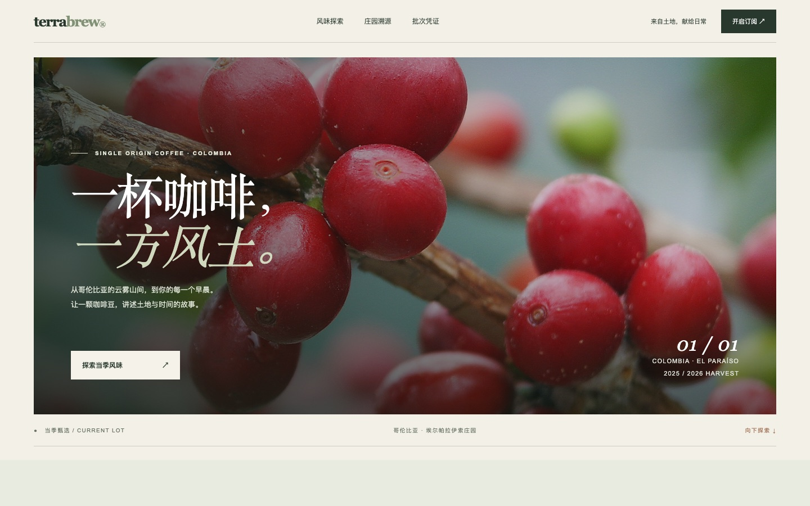
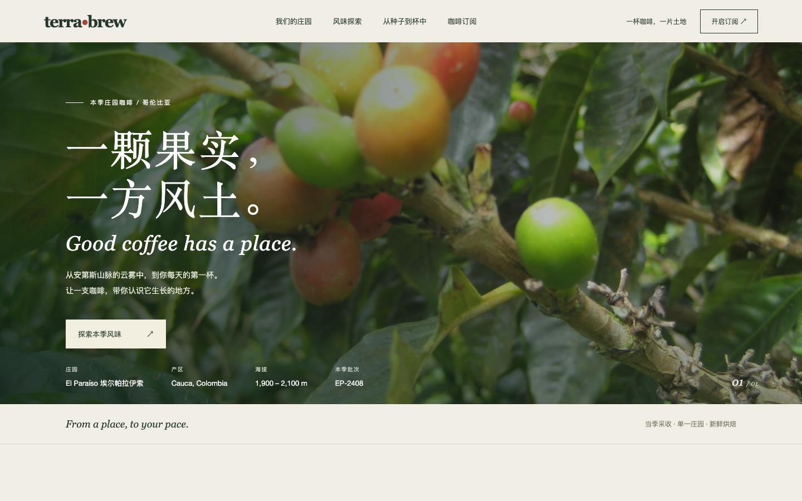
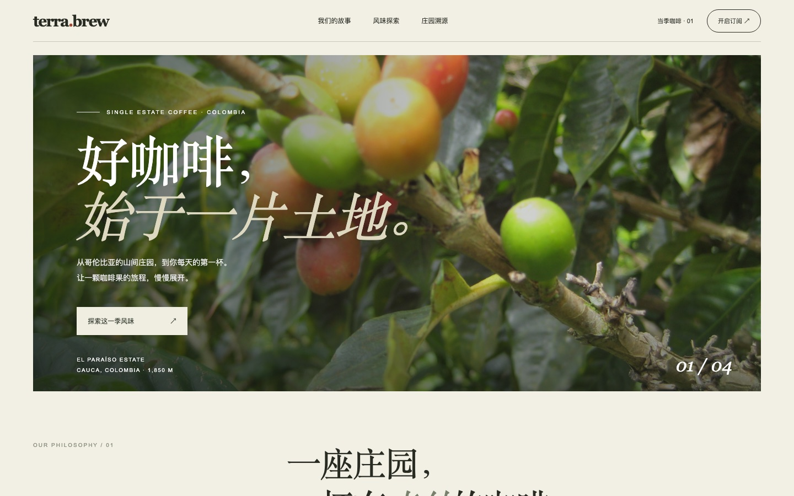
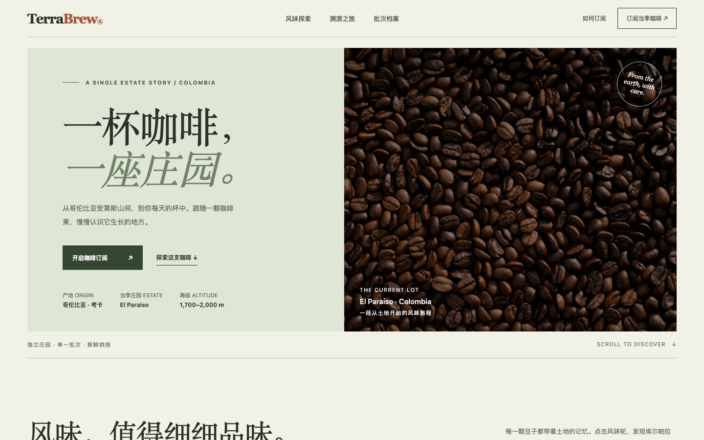
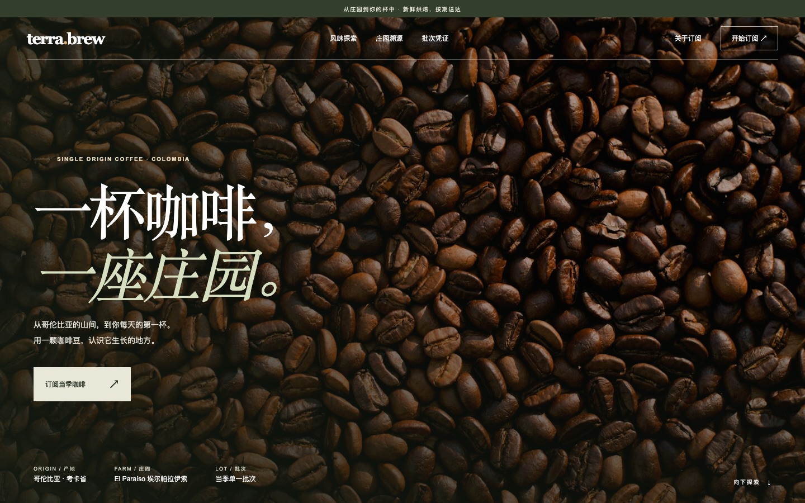
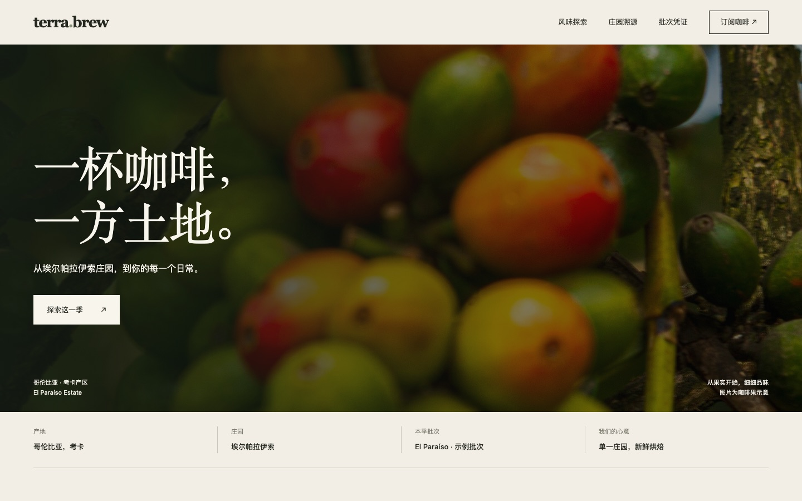

SAME BRIEF / DIFFERENT HANDS
同一道题目，
不同的手。
每件成品都从同一份提示词出发，使用同一个执行环境，只改变挂载的技能。图版按同一窗口截取，摆在一起，差异才看得见。
案例 01 / 2026
精品咖啡
订阅官网
TerraBrew，哥伦比亚埃尔帕拉伊索庄园，本季批次
- 收录
- 01 案例 / 06 结果
- 生成环境
- CLAUDE CODE
- 更新
- 2026-11-06
精品咖啡订阅官网

基准 · 不使用技能
图版 01整幅果实照片铺满首屏，中文标题压在左侧；导航三项，画面下沿只留批次与庄园一行小字。
对照组，不挂载技能
frontend-design
图版 02同样是果实照片，标题下多一行英文，导航扩为四项；画面底部并列庄园、产区、海拔与批次四项信息。
查看技能仓库
oil-ui
图版 03首屏标题改为「好咖啡，始于一片土地。」，字号更大；底部信息条与下一段标题露出，页面节奏更接近长文。
查看技能仓库
impeccable
图版 04首屏改为左右分栏：左侧奶油色文字区，右侧深色咖啡豆照片；标题用衬线大字，下一段「风味」章节露出。
查看技能仓库
design-taste-frontend
图版 05首屏用深色咖啡豆照片铺满，白色标题压在中间偏左；整体色调最暗，接近一张海报。
查看技能仓库
hallmark
图版 06首屏用果实照片，标题与信息行分列上下；导航四项，画面底部并列四组庄园信息，版式较规整。
查看技能仓库目次 / 待刊
三份提示词，等待生成-
02
等待生成
黑胶播放器
桌面端音乐 App 的「正在播放」模块：唱臂落下开始播放，拖动唱臂可以跳到歌曲的某一段，暂停时唱片慢慢停下。
-
03
等待生成
绘本插画师个人网站
一位独立绘本插画师的个人网站：作品集、正在连载的绘本、合作邀约。首页加一个作品详情页。
-
04
等待生成
3D 雪景页面
一个三维雪景页面，雪花飘扬，用页面展示浪漫与美学。
供稿技能
五个仓库快照编写说明
只改变一个变量把技能单独
拿出来看。
每次运行使用同一份提示词、同一个执行环境与同一个模型 codex/gpt-6.1-terra，思考强度 high。对照组不挂载技能，其余运行只多出一个技能。每组使用独立进程、独立配置目录与空 MCP 配置，隔离脚本会在运行结束后核验技能清单。
图版统一按 1440 × 900 截取首屏，按原比例排入册页。单次生成不能代表技能的平均水平；这本册子记录可见的差异，不做排名。